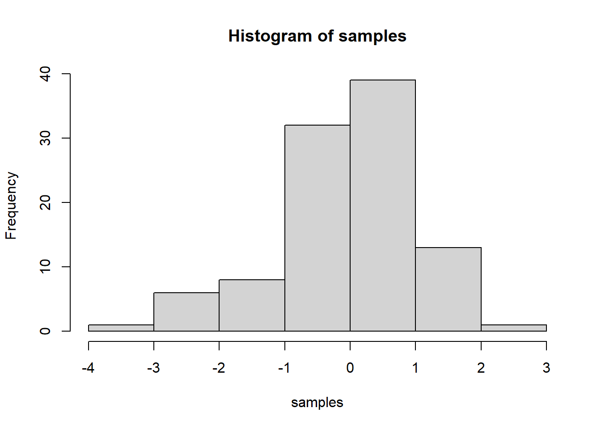
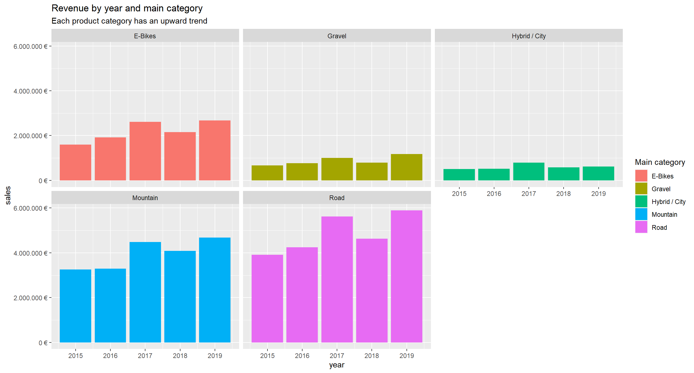
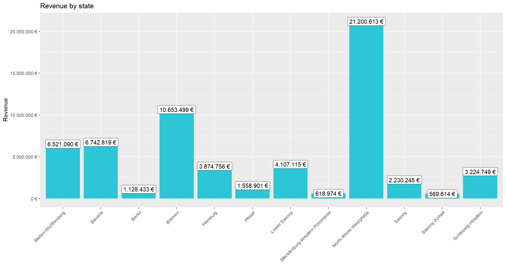
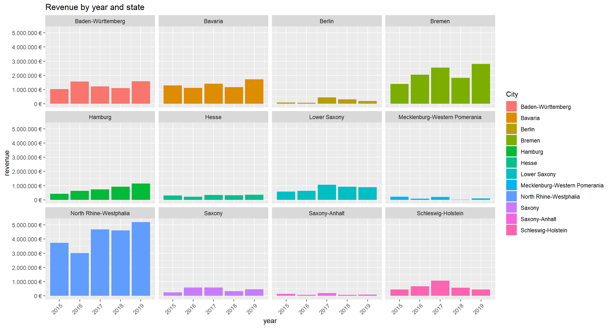
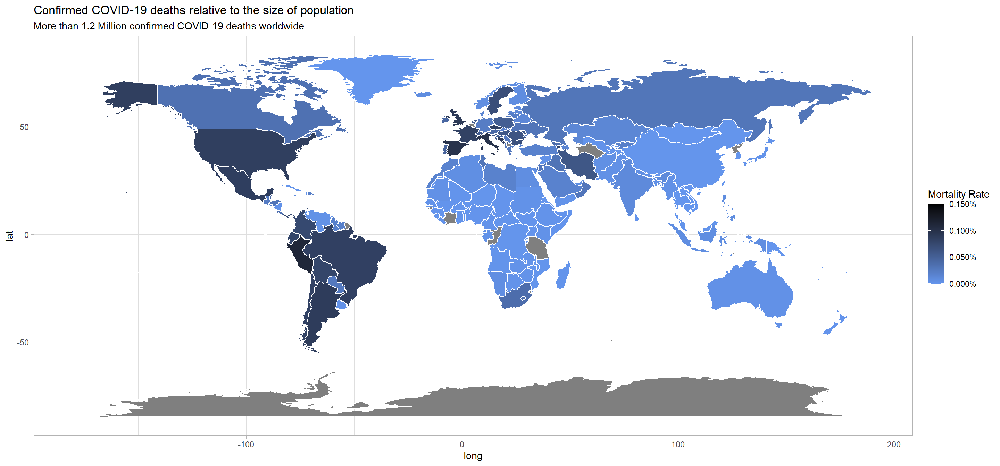

Journal (reproducible report)
Reuben Vinu Alexander
2020-11-05
1 Intro to the Tidyverse Challenge
Last compiled: 2020-12-06
1.1 Challenge 1_1 & 1_2
# Data Science at TUHH ------------------------------------------------------
# SALES ANALYSIS ----
# 1.0 Load libraries ----
library(tidyverse)
library(readxl)
# 2.0 Importing Files ----
bikes_tbl <- read_excel(path = "00_data/01_bike_sales/01_raw_data/bikes.xlsx")
orderlines_tbl <- read_excel(path = "00_data/01_bike_sales/01_raw_data/orderlines.xlsx")
bikeshops_tbl <- read_excel(path = "00_data/01_bike_sales/01_raw_data/bikeshops.xlsx")
# 3.0 Examining Data ----
orderlines_tbl## # A tibble: 15,644 x 7
## ...1 order.id order.line order.date customer.id product.id quantity
## <chr> <dbl> <dbl> <dttm> <dbl> <dbl> <dbl>
## 1 1 1 1 2015-01-07 00:00:00 2 2681 1
## 2 2 1 2 2015-01-07 00:00:00 2 2411 1
## 3 3 2 1 2015-01-10 00:00:00 10 2629 1
## 4 4 2 2 2015-01-10 00:00:00 10 2137 1
## 5 5 3 1 2015-01-10 00:00:00 6 2367 1
## 6 6 3 2 2015-01-10 00:00:00 6 1973 1
## 7 7 3 3 2015-01-10 00:00:00 6 2422 1
## 8 8 3 4 2015-01-10 00:00:00 6 2655 1
## 9 9 3 5 2015-01-10 00:00:00 6 2247 1
## 10 10 4 1 2015-01-11 00:00:00 22 2408 1
## # ... with 15,634 more rows# 4.0 Joining Data ----
#left_join(orderlines_tbl, bikes_tbl, by = c("product.id" = "bike.id"))
bike_orderlines_joined_tbl <- orderlines_tbl %>%
left_join(bikes_tbl, by = c("product.id" = "bike.id")) %>%
left_join(bikeshops_tbl, by = c("customer.id" = "bikeshop.id"))
# 5.0 Wrangling Data ----
bike_orderlines_wrangled_tbl <- bike_orderlines_joined_tbl %>%
separate(col = category,
into = c("category.1", "category.2", "category.3"),
sep = " - ") %>%
separate(col = location,
into = c("city", "state"),
sep = ", ") %>%
mutate(total.price = price * quantity) %>%
select(-...1, -gender) %>%
select(-ends_with(".id")) %>%
bind_cols(bike_orderlines_joined_tbl %>% select(order.id)) %>%
select(order.id, contains("order"), contains("model"), contains("category"),
price, quantity, total.price, everything()) %>%
rename(bikeshop = name) %>%
set_names(names(.) %>% str_replace_all("\\.", "_"))
view(bike_orderlines_wrangled_tbl)
# 6.0 Business Insights ----
# 6.1 Sales by Year ----
library(lubridate)
# Step 1 - Manipulate
sales_by_year_tbl <- bike_orderlines_wrangled_tbl %>%
select(order_date, total_price) %>%
mutate(year = year(order_date)) %>%
group_by(year) %>%
summarise(sales = sum(total_price)) %>%
mutate(sales_text = scales::dollar(sales, big.mark = ".",
decimal.mark = ",",
prefix = "",
suffix = " €"))
# Step 2 - Visualize
sales_by_year_tbl %>%
ggplot(aes(x = year, y = sales)) +
geom_col(fill = "#2DC6D6") +
geom_label(aes(label = sales_text)) +
geom_smooth(method = "lm", se = FALSE) +
scale_y_continuous(labels = scales::dollar_format(big.mark = ".",
decimal.mark = ",",
prefix = "",
suffix = " €")) +
labs(
title = "Revenue by year",
subtitle = "Upward Trend",
x = "", # Override defaults for x and y
y = "Revenue"
)
# 6.2 Sales by Year and Category 2 ----
# Step 1 - Manipulate
sales_by_year_cat_1_tbl <- bike_orderlines_wrangled_tbl %>%
select(order_date, total_price, category_1) %>%
mutate(year = year(order_date)) %>%
group_by(year, category_1) %>%
summarise(sales = sum(total_price)) %>%
ungroup() %>%
mutate(sales_text = scales::dollar(sales, big.mark = ".",
decimal.mark = ",",
prefix = "",
suffix = " €"))
view(sales_by_year_cat_1_tbl)
# Step 2 - Visualize
sales_by_year_cat_1_tbl %>%
# Set up x, y, fill
ggplot(aes(x = year, y = sales, fill = category_1)) +
# Geometries
geom_col() +
facet_wrap(~ category_1) +
scale_y_continuous(labels = scales::dollar_format(big.mark = ".",
decimal.mark = ",",
prefix = "",
suffix = " €")) +
labs(
title = "Revenue by year and main category",
subtitle = "Each product category has an upward trend",
fill = "Main category" # Changes the legend name
)
# 7.0 Writing Files ----
# 7.1 Excel ----
#install.packages("writexl")
#library("writexl")
#bike_orderlines_wrangled_tbl %>%
#write_xlsx("00_data/01_bike_sales/02_wrangled_data/bike_orderlines.xlsx")
# 7.2 CSV ----
#bike_orderlines_wrangled_tbl %>%
#write_csv("00_data/01_bike_sales/02_wrangled_data/bike_orderlines.csv")
# 7.3 RDS ----
#bike_orderlines_wrangled_tbl %>%
#write_rds("00_data/01_bike_sales/02_wrangled_data/bike_orderlines.rds")
# 8.0 Challenge----
# Revenue by state
# Step 1 - Manipulate
revenue_by_state_tbl <- bike_orderlines_wrangled_tbl %>%
select(total_price, state) %>%
group_by(state) %>%
summarise(revenue = sum(total_price)) %>%
mutate(revenue_text = scales::dollar(revenue, big.mark = ".",
decimal.mark = ",",
prefix = "",
suffix = " €"))
view(revenue_by_state_tbl)
# Step 2 - Visualize
revenue_by_state_tbl %>%
ggplot(aes(x = state, y = revenue)) +
geom_col(fill = "#2DC6D6") +
geom_label(aes(label = revenue_text)) +
geom_smooth(method = "lm", se = FALSE) +
scale_y_continuous(labels = scales::dollar_format(big.mark = ".",
decimal.mark = ",",
prefix = "",
suffix = " €")) +
theme(axis.text.x = element_text(angle = 45, hjust = 1)) +
labs(
title = "Revenue by state",
x = "", # Override defaults for x and y
y = "Revenue"
)
# Revenue by year and location
# Step 1 - Manipulate
revenue_by_year_state_tbl <- bike_orderlines_wrangled_tbl %>%
select(order_date, total_price, state) %>%
mutate(year = year(order_date)) %>%
group_by(year, state) %>%
summarize(revenue = sum(total_price)) %>%
mutate(revenue_text = scales::dollar(revenue, big.mark = ".",
decimal.mark = ",",
prefix = "",
suffix = " €"))
view(revenue_by_year_state_tbl)
# Step 2 - Visualize
revenue_by_year_state_tbl %>%
# Set up x, y, fill
ggplot(aes(x = year, y = revenue, fill = state)) +
# Geometries
geom_col() +
facet_wrap(~ state) +
scale_y_continuous(labels = scales::dollar_format(big.mark = ".",
decimal.mark = ",",
prefix = "",
suffix = " €")) +
labs(
title = "Revenue by year and state",
fill = "City"
) +
theme(axis.text.x = element_text(angle = 45, hjust = 1))
2 Data Acquisition Challenge
Last compiled: 2020-12-06
2.1 Challenge 2_1
library(httr)
user_data <- GET("https://api.nytimes.com/svc/mostpopular/v2/viewed/7.json?api-key=YWHPIcHZhaVdsCWE1uAAcHBJPJAOGOta")
#user_data
rawToChar(user_data$content)## [1] "{\"status\":\"OK\",\"copyright\":\"Copyright (c) 2020 The New York Times Company. All Rights Reserved.\",\"num_results\":20,\"results\":[{\"uri\":\"nyt://article/6bb97b0e-475e-5888-a484-962f2c241b3a\",\"url\":\"https://www.nytimes.com/2020/11/28/us/monolith-utah-disappeared.html\",\"id\":100000007477435,\"asset_id\":100000007477435,\"source\":\"New York Times\",\"published_date\":\"2020-11-28\",\"updated\":\"2020-12-04 16:13:18\",\"section\":\"U.S.\",\"subsection\":\"\",\"nytdsection\":\"u.s.\",\"adx_keywords\":\"Art;Sculpture;Bureau of Land Management;Utah\",\"column\":null,\"byline\":\"By Bryan Pietsch\",\"type\":\"Article\",\"title\":\"That Mysterious Monolith in the Utah Desert? Itâ\200\231s Gone, Officials Say\",\"abstract\":\"The metal structure has been removed, Utah officials said on Saturday, adding that they had not taken it down.\",\"des_facet\":[\"Art\",\"Sculpture\"],\"org_facet\":[\"Bureau of Land Management\"],\"per_facet\":[],\"geo_facet\":[\"Utah\"],\"media\":[{\"type\":\"image\",\"subtype\":\"photo\",\"caption\":\"A metal object was found in the remote Utah desert last week by state workers.\",\"copyright\":\"Utah Department of Public Safety, via Associated Press\",\"approved_for_syndication\":1,\"media-metadata\":[{\"url\":\"https://static01.nyt.com/images/2020/11/28/us/politics/28xp-monolith-photo/28xp-monolith-photo-thumbStandard.jpg\",\"format\":\"Standard Thumbnail\",\"height\":75,\"width\":75},{\"url\":\"https://static01.nyt.com/images/2020/11/28/us/politics/28xp-monolith-photo/28xp-monolith-photo-mediumThreeByTwo210.jpg\",\"format\":\"mediumThreeByTwo210\",\"height\":140,\"width\":210},{\"url\":\"https://static01.nyt.com/images/2020/11/28/us/politics/28xp-monolith-photo/28xp-monolith-photo-mediumThreeByTwo440.jpg\",\"format\":\"mediumThreeByTwo440\",\"height\":293,\"width\":440}]}],\"eta_id\":0},{\"uri\":\"nyt://article/5248fea5-88e0-5544-a72b-77fdd3064e78\",\"url\":\"https://www.nytimes.com/2020/12/01/us/politics/rudy-giuliani-pardon.html\",\"id\":100000007480846,\"asset_id\":100000007480846,\"source\":\"New York Times\",\"published_date\":\"2020-12-01\",\"updated\":\"2020-12-04 09:35:40\",\"section\":\"U.S.\",\"subsection\":\"Politics\",\"nytdsection\":\"u.s.\",\"adx_keywords\":\"Amnesties, Commutations and Pardons;Presidential Election of 2020;Trump-Ukraine Whistle-Blower Complaint and Impeachment Inquiry;Russian Interference in 2016 US Elections and Ties to Trump Associates;United States Politics and Government;Presidents and Presidency (US);Giuliani, Rudolph W;Trump, Donald J;Trump, Ivanka;Trump, Donald J Jr;Trump, Eric F (1984- )\",\"column\":null,\"byline\":\"By Maggie Haberman and Michael S. Schmidt\",\"type\":\"Article\",\"title\":\"Trump Has Discussed With Advisers Pardons for His 3 Eldest Children and Giuliani\",\"abstract\":\"Rudolph W. Giuliani, who is promoting baseless claims of widespread election fraud, talked about a pardon with President Trump as recently as last week.\",\"des_facet\":[\"Amnesties, Commutations and Pardons\",\"Presidential Election of 2020\",\"Trump-Ukraine Whistle-Blower Complaint and Impeachment Inquiry\",\"Russian Interference in 2016 US Elections and Ties to Trump Associates\",\"United States Politics and Government\",\"Presidents and Presidency (US)\"],\"org_facet\":[],\"per_facet\":[\"Giuliani, Rudolph W\",\"Trump, Donald J\",\"Trump, Ivanka\",\"Trump, Donald J Jr\",\"Trump, Eric F (1984- )\"],\"geo_facet\":[],\"media\":[{\"type\":\"image\",\"subtype\":\"photo\",\"caption\":\"A pardon for Rudolph W. Giuliani, President Trumpâ\200\231s lawyer, is certain to prompt accusations that Mr. Trump has used his power to obstruct investigations and insulate himself and his allies. \",\"copyright\":\"Erin Schaff/The New York Times\",\"approved_for_syndication\":1,\"media-metadata\":[{\"url\":\"https://static01.nyt.com/images/2020/12/01/us/politics/01transition-briefing-rudy-giuliani-pardon1/01transition-briefing-rudy-giuliani-pardon1-thumbStandard.jpg\",\"format\":\"Standard Thumbnail\",\"height\":75,\"width\":75},{\"url\":\"https://static01.nyt.com/images/2020/12/01/us/politics/01transition-briefing-rudy-giuliani-pardon1/01transition-briefing-rudy-giuliani-pardon1-mediumThreeByTwo210.jpg\",\"format\":\"mediumThreeByTwo210\",\"height\":140,\"width\":210},{\"url\":\"https://static01.nyt.com/images/2020/12/01/us/politics/01transition-briefing-rudy-giuliani-pardon1/01transition-briefing-rudy-giuliani-pardon1-mediumThreeByTwo440.jpg\",\"format\":\"mediumThreeByTwo440\",\"height\":293,\"width\":440}]}],\"eta_id\":0},{\"uri\":\"nyt://article/edfb7f02-ac48-5b65-ad7f-062e6cd36189\",\"url\":\"https://www.nytimes.com/2020/12/01/arts/design/utah-monolith-removed-instagram.html\",\"id\":100000007478060,\"asset_id\":100000007478060,\"source\":\"New York Times\",\"published_date\":\"2020-12-01\",\"updated\":\"2020-12-04 16:13:25\",\"section\":\"Arts\",\"subsection\":\"Art \\u0026 Design\",\"nytdsection\":\"arts\",\"adx_keywords\":\"Sculpture;Deserts;Federal Lands;Art;McCracken, John;Utah\",\"column\":null,\"byline\":\"By Serge F. Kovaleski, Deborah Solomon and Zoe Rosenberg\",\"type\":\"Article\",\"title\":\"How a Mysterious Monolith Vanished Overnight (It Wasnâ\200\231t Aliens)\",\"abstract\":\"A photographer said four men dismantled the mysterious shiny object that has captivated the country. Two Utah residents said they took part in the removal.\",\"des_facet\":[\"Sculpture\",\"Deserts\",\"Federal Lands\",\"Art\"],\"org_facet\":[],\"per_facet\":[\"McCracken, John\"],\"geo_facet\":[\"Utah\"],\"media\":[{\"type\":\"image\",\"subtype\":\"photo\",\"caption\":\"Ross Bernards took moonlit photographs of his friend Peter Jans atop the monolith in southeastern Utah on Nov. 27. Moments later they witnessed its removal.\",\"copyright\":\"Ross Bernards\",\"approved_for_syndication\":1,\"media-metadata\":[{\"url\":\"https://static01.nyt.com/images/2020/12/06/us/30monolith1/30monolith1-thumbStandard-v2.jpg\",\"format\":\"Standard Thumbnail\",\"height\":75,\"width\":75},{\"url\":\"https://static01.nyt.com/images/2020/12/06/us/30monolith1/30monolith1-mediumThreeByTwo210-v3.jpg\",\"format\":\"mediumThreeByTwo210\",\"height\":140,\"width\":210},{\"url\":\"https://static01.nyt.com/images/2020/12/06/us/30monolith1/30monolith1-mediumThreeByTwo440-v3.jpg\",\"format\":\"mediumThreeByTwo440\",\"height\":293,\"width\":440}]}],\"eta_id\":0},{\"uri\":\"nyt://article/9fa90aa8-3a25-5284-84d4-b07fad97d038\",\"url\":\"https://www.nytimes.com/2020/12/04/opinion/sunday/pornhub-rape-trafficking.html\",\"id\":100000007479053,\"asset_id\":100000007479053,\"source\":\"New York Times\",\"published_date\":\"2020-12-04\",\"updated\":\"2020-12-04 22:47:07\",\"section\":\"Opinion\",\"subsection\":\"Sunday Review\",\"nytdsection\":\"opinion\",\"adx_keywords\":\"Child Abuse and Neglect;Sex Crimes;Child Pornography;Video Recordings, Downloads and Streaming;Computers and the Internet;Women and Girls;Pornography;Human Trafficking;Regulation and Deregulation of Industry;Pornhub;MindGeek Sarl;Canada\",\"column\":null,\"byline\":\"By Nicholas Kristof\",\"type\":\"Article\",\"title\":\"The Children of Pornhub\",\"abstract\":\"Why does Canada allow this company to profit off videos of exploitation and assault?\",\"des_facet\":[\"Child Abuse and Neglect\",\"Sex Crimes\",\"Child Pornography\",\"Video Recordings, Downloads and Streaming\",\"Computers and the Internet\",\"Women and Girls\",\"Pornography\",\"Human Trafficking\",\"Regulation and Deregulation of Industry\"],\"org_facet\":[\"Pornhub\",\"MindGeek Sarl\"],\"per_facet\":[],\"geo_facet\":[\"Canada\"],\"media\":[{\"type\":\"image\",\"subtype\":\"photo\",\"caption\":\"Serena K. Fleites, 19, was 14 when a boy she had a crush on asked her to make a naked video and send it to him. She did, and it ended up on Pornhub.\",\"copyright\":\"Rachel Bujalski for The New York Times\",\"approved_for_syndication\":1,\"media-metadata\":[{\"url\":\"https://static01.nyt.com/images/2020/12/06/opinion/04kristof-2-R/04kristof-2-thumbStandard.jpg\",\"format\":\"Standard Thumbnail\",\"height\":75,\"width\":75},{\"url\":\"https://static01.nyt.com/images/2020/12/06/opinion/04kristof-2-R/04kristof-2-mediumThreeByTwo210.jpg\",\"format\":\"mediumThreeByTwo210\",\"height\":140,\"width\":210},{\"url\":\"https://static01.nyt.com/images/2020/12/06/opinion/04kristof-2-R/04kristof-2-mediumThreeByTwo440.jpg\",\"format\":\"mediumThreeByTwo440\",\"height\":293,\"width\":440}]}],\"eta_id\":0},{\"uri\":\"nyt://article/15e7ebd9-29a4-5c41-be25-bae1ecbd14de\",\"url\":\"https://www.nytimes.com/2020/11/27/opinion/trump-democrats-coronavirus.html\",\"id\":100000007469120,\"asset_id\":100000007469120,\"source\":\"New York Times\",\"published_date\":\"2020-11-27\",\"updated\":\"2020-11-30 02:02:12\",\"section\":\"Opinion\",\"subsection\":\"\",\"nytdsection\":\"opinion\",\"adx_keywords\":\"Presidential Election of 2020;Voting and Voters;Polls and Public Opinion;Coronavirus (2019-nCoV);United States Economy;United States Politics and Government;Trump, Donald J;Biden, Joseph R Jr;Democratic Party;Republican Party\",\"column\":null,\"byline\":\"By Will Wilkinson\",\"type\":\"Article\",\"title\":\"Why Did So Many Americans Vote for Trump?\",\"abstract\":\"To the dismay of Democrats, the presidentâ\200\231s strategy of ignoring the pandemic mostly worked for Republicans.\",\"des_facet\":[\"Presidential Election of 2020\",\"Voting and Voters\",\"Polls and Public Opinion\",\"Coronavirus (2019-nCoV)\",\"United States Economy\",\"United States Politics and Government\"],\"org_facet\":[\"Democratic Party\",\"Republican Party\"],\"per_facet\":[\"Trump, Donald J\",\"Biden, Joseph R Jr\"],\"geo_facet\":[],\"media\":[{\"type\":\"image\",\"subtype\":\"photo\",\"caption\":\"Supporters of President Trump gathered outside the Walter Reed National Military Medical Center while he was being treated for Covid-19.\",\"copyright\":\"Damon Winter/The New York Times\",\"approved_for_syndication\":1,\"media-metadata\":[{\"url\":\"https://static01.nyt.com/images/2020/11/27/opinion/27wilkinsonWeb/27wilkinsonWeb-thumbStandard.jpg\",\"format\":\"Standard Thumbnail\",\"height\":75,\"width\":75},{\"url\":\"https://static01.nyt.com/images/2020/11/27/opinion/27wilkinsonWeb/merlin_178067448_508c4e3f-9b53-4bfe-9c42-b82761536375-mediumThreeByTwo210.jpg\",\"format\":\"mediumThreeByTwo210\",\"height\":140,\"width\":210},{\"url\":\"https://static01.nyt.com/images/2020/11/27/opinion/27wilkinsonWeb/merlin_178067448_508c4e3f-9b53-4bfe-9c42-b82761536375-mediumThreeByTwo440.jpg\",\"format\":\"mediumThreeByTwo440\",\"height\":293,\"width\":440}]}],\"eta_id\":0},{\"uri\":\"nyt://article/972adb87-30eb-5113-a593-8fe33a9337d1\",\"url\":\"https://www.nytimes.com/2020/11/26/opinion/pope-francis-covid.html\",\"id\":100000007459592,\"asset_id\":100000007459592,\"source\":\"New York Times\",\"published_date\":\"2020-11-26\",\"updated\":\"2020-12-01 09:56:24\",\"section\":\"Opinion\",\"subsection\":\"\",\"nytdsection\":\"opinion\",\"adx_keywords\":\"Coronavirus (2019-nCoV);Christians and Christianity;Francis;Roman Catholic Church\",\"column\":null,\"byline\":\"By Pope Francis\",\"type\":\"Article\",\"title\":\"Pope Francis: A Crisis Reveals What Is in Our Hearts\",\"abstract\":\"To come out of this pandemic better than we went in, we must let ourselves be touched by othersâ\200\231 pain.\",\"des_facet\":[\"Coronavirus (2019-nCoV)\",\"Christians and Christianity\"],\"org_facet\":[\"Roman Catholic Church\"],\"per_facet\":[\"Francis\"],\"geo_facet\":[],\"media\":[{\"type\":\"image\",\"subtype\":\"photo\",\"caption\":\"  \",\"copyright\":\"Illustration by Najeebah Al-Ghadban; photographs by Getty Images\",\"approved_for_syndication\":1,\"media-metadata\":[{\"url\":\"https://static01.nyt.com/images/2020/11/29/opinion/sunday/26pope/26pope-thumbStandard-v4.jpg\",\"format\":\"Standard Thumbnail\",\"height\":75,\"width\":75},{\"url\":\"https://static01.nyt.com/images/2020/11/29/opinion/sunday/26pope/26pope-mediumThreeByTwo210-v3.jpg\",\"format\":\"mediumThreeByTwo210\",\"height\":140,\"width\":210},{\"url\":\"https://static01.nyt.com/images/2020/11/29/opinion/sunday/26pope/26pope-mediumThreeByTwo440-v3.jpg\",\"format\":\"mediumThreeByTwo440\",\"height\":293,\"width\":440}]}],\"eta_id\":0},{\"uri\":\"nyt://article/3e9b1dcb-54d1-5794-9146-6ffe5762026c\",\"url\":\"https://www.nytimes.com/2020/12/01/movies/elliot-page-transgender-juno.html\",\"id\":100000007481197,\"asset_id\":100000007481197,\"source\":\"New York Times\",\"published_date\":\"2020-12-01\",\"updated\":\"2020-12-02 06:31:21\",\"section\":\"Movies\",\"subsection\":\"\",\"nytdsection\":\"movies\",\"adx_keywords\":\"Transgender and Transsexuals;Content Type: Personal Profile;Actors and Actresses;Television;Movies;Homosexuality and Bisexuality;Page, Elliot (1987- )\",\"column\":null,\"byline\":\"By Maya Salam\",\"type\":\"Article\",\"title\":\"Elliot Page, Oscar-Nominated â\200\230Junoâ\200\231 Star, Announces He Is Transgender\",\"abstract\":\"â\200œHi friends, I want to share with you that I am trans, my pronouns are he/they and my name is Elliot,â\200\235 Page wrote in a statement that he posted on Tuesday.\",\"des_facet\":[\"Transgender and Transsexuals\",\"Content Type: Personal Profile\",\"Actors and Actresses\",\"Television\",\"Movies\",\"Homosexuality and Bisexuality\"],\"org_facet\":[],\"per_facet\":[\"Page, Elliot (1987- )\"],\"geo_facet\":[],\"media\":[{\"type\":\"image\",\"subtype\":\"photo\",\"caption\":\"\\u0026ldquo;My joy is real, but it is also fragile,\\u0026rdquo; Elliot Page wrote in a statement announcing he is transgender.\",\"copyright\":\"Rich Polk/Getty Images for IMDb\",\"approved_for_syndication\":1,\"media-metadata\":[{\"url\":\"https://static01.nyt.com/images/2020/12/02/arts/01elliotpage/01elliotpage-thumbStandard-v3.jpg\",\"format\":\"Standard Thumbnail\",\"height\":75,\"width\":75},{\"url\":\"https://static01.nyt.com/images/2020/12/02/arts/01elliotpage/01elliotpage-mediumThreeByTwo210-v3.jpg\",\"format\":\"mediumThreeByTwo210\",\"height\":140,\"width\":210},{\"url\":\"https://static01.nyt.com/images/2020/12/02/arts/01elliotpage/01elliotpage-mediumThreeByTwo440-v3.jpg\",\"format\":\"mediumThreeByTwo440\",\"height\":293,\"width\":440}]}],\"eta_id\":0},{\"uri\":\"nyt://article/e151a91d-c2c6-566c-8ba3-aa326b98beaf\",\"url\":\"https://www.nytimes.com/2020/11/28/us/Biden-cat-dogs-German-shepherd.html\",\"id\":100000007477207,\"asset_id\":100000007477207,\"source\":\"New York Times\",\"published_date\":\"2020-11-28\",\"updated\":\"2020-11-30 06:46:47\",\"section\":\"U.S.\",\"subsection\":\"\",\"nytdsection\":\"u.s.\",\"adx_keywords\":\"Cats;White House Building (Washington, DC);Presidents and Presidency (US);Pets;United States Politics and Government;Biden, Joseph R Jr;Biden, Jill Tracy Jacobs\",\"column\":null,\"byline\":\"By Allyson Waller\",\"type\":\"Article\",\"title\":\"A Cat Is Said to Be Joining the Bidens in the White House\",\"abstract\":\"The last cat to live in the White House, India, belonged to President George W. Bush.\",\"des_facet\":[\"Cats\",\"White House Building (Washington, DC)\",\"Presidents and Presidency (US)\",\"Pets\",\"United States Politics and Government\"],\"org_facet\":[],\"per_facet\":[\"Biden, Joseph R Jr\",\"Biden, Jill Tracy Jacobs\"],\"geo_facet\":[],\"media\":[{\"type\":\"image\",\"subtype\":\"photo\",\"caption\":\"President Bill Clinton owned two pets, a cat named Socks and a dog named Buddy.\",\"copyright\":\"Marcy Nighswander/Associated Press\",\"approved_for_syndication\":1,\"media-metadata\":[{\"url\":\"https://static01.nyt.com/images/2020/11/28/multimedia/28xp-biden-cat-photo/28xp-biden-cat-photo-thumbStandard.jpg\",\"format\":\"Standard Thumbnail\",\"height\":75,\"width\":75},{\"url\":\"https://static01.nyt.com/images/2020/11/28/multimedia/28xp-biden-cat-photo/28xp-biden-cat-photo-mediumThreeByTwo210.jpg\",\"format\":\"mediumThreeByTwo210\",\"height\":140,\"width\":210},{\"url\":\"https://static01.nyt.com/images/2020/11/28/multimedia/28xp-biden-cat-photo/28xp-biden-cat-photo-mediumThreeByTwo440.jpg\",\"format\":\"mediumThreeByTwo440\",\"height\":293,\"width\":440}]}],\"eta_id\":0},{\"uri\":\"nyt://article/3f040dff-0256-562a-b495-ef1abcd2854a\",\"url\":\"https://www.nytimes.com/2020/11/28/obituaries/tony-hsieh-dead.html\",\"id\":100000007477075,\"asset_id\":100000007477075,\"source\":\"New York Times\",\"published_date\":\"2020-11-28\",\"updated\":\"2020-11-30 10:58:35\",\"section\":\"Obituaries\",\"subsection\":\"\",\"nytdsection\":\"obituaries\",\"adx_keywords\":\"Deaths (Obituaries);E-Commerce;Shoes and Boots;Entrepreneurship;Hsieh, Tony;Zappos;Las Vegas (Nev)\",\"column\":null,\"byline\":\"By Glenn Rifkin\",\"type\":\"Article\",\"title\":\"Tony Hsieh, Longtime Chief of Zappos, Is Dead at 46\",\"abstract\":\"In the early days of online retailing, he realized that the key to success was making people feel comfortable and secure shopping on the internet.\",\"des_facet\":[\"Deaths (Obituaries)\",\"E-Commerce\",\"Shoes and Boots\",\"Entrepreneurship\"],\"org_facet\":[\"Zappos\"],\"per_facet\":[\"Hsieh, Tony\"],\"geo_facet\":[\"Las Vegas (Nev)\"],\"media\":[{\"type\":\"image\",\"subtype\":\"photo\",\"caption\":\"Tony Hsieh in 2013. He led Zappos, the online shoe retailer, for two decades.\",\"copyright\":\"Cory Morse/The Grand Rapids Press, via Associated Press\",\"approved_for_syndication\":1,\"media-metadata\":[{\"url\":\"https://static01.nyt.com/images/2020/11/29/multimedia/20hsieh-print1/20hsieh-image2-thumbStandard.jpg\",\"format\":\"Standard Thumbnail\",\"height\":75,\"width\":75},{\"url\":\"https://static01.nyt.com/images/2020/11/29/multimedia/20hsieh-print1/20hsieh-image2-mediumThreeByTwo210.jpg\",\"format\":\"mediumThreeByTwo210\",\"height\":140,\"width\":210},{\"url\":\"https://static01.nyt.com/images/2020/11/29/multimedia/20hsieh-print1/20hsieh-image2-mediumThreeByTwo440.jpg\",\"format\":\"mediumThreeByTwo440\",\"height\":293,\"width\":440}]}],\"eta_id\":0},{\"uri\":\"nyt://article/9ff9efc2-8c0c-57af-9ae9-6da61b6f569b\",\"url\":\"https://www.nytimes.com/2020/11/30/opinion/trump-conspiracy-germany-1918.html\",\"id\":100000007473926,\"asset_id\":100000007473926,\"source\":\"New York Times\",\"published_date\":\"2020-11-30\",\"updated\":\"2020-12-02 03:17:22\",\"section\":\"Opinion\",\"subsection\":\"\",\"nytdsection\":\"opinion\",\"adx_keywords\":\"World War I (1914-18);Conspiracy Theories;Presidential Election of 2020;Hitler, Adolf;Trump, Donald J;Germany\",\"column\":null,\"byline\":\"By Jochen Bittner\",\"type\":\"Article\",\"title\":\"1918 Germany Has a Warning for America\",\"abstract\":\"Donald Trumpâ\200\231s â\200œStop the Stealâ\200\235 campaign recalls one of the most disastrous political lies of the 20th century.\",\"des_facet\":[\"World War I (1914-18)\",\"Conspiracy Theories\",\"Presidential Election of 2020\"],\"org_facet\":[],\"per_facet\":[\"Hitler, Adolf\",\"Trump, Donald J\"],\"geo_facet\":[\"Germany\"],\"media\":[{\"type\":\"image\",\"subtype\":\"photo\",\"caption\":\"\",\"copyright\":\"Getty Images\",\"approved_for_syndication\":1,\"media-metadata\":[{\"url\":\"https://static01.nyt.com/images/2020/11/30/opinion/30bittnerWeb/30bittnerWeb-thumbStandard.jpg\",\"format\":\"Standard Thumbnail\",\"height\":75,\"width\":75},{\"url\":\"https://static01.nyt.com/images/2020/11/30/opinion/30bittnerWeb/30bittnerWeb-mediumThreeByTwo210.jpg\",\"format\":\"mediumThreeByTwo210\",\"height\":140,\"width\":210},{\"url\":\"https://static01.nyt.com/images/2020/11/30/opinion/30bittnerWeb/30bittnerWeb-mediumThreeByTwo440.jpg\",\"format\":\"mediumThreeByTwo440\",\"height\":293,\"width\":440}]}],\"eta_id\":0},{\"uri\":\"nyt://article/409519bd-0b16-58c5-b6e3-65a6fcb361b0\",\"url\":\"https://www.nytimes.com/2020/11/27/business/mckinsey-purdue-oxycontin-opioids.html\",\"id\":100000007473989,\"asset_id\":100000007473989,\"source\":\"New York Times\",\"published_date\":\"2020-11-27\",\"updated\":\"2020-12-01 13:46:42\",\"section\":\"Business\",\"subsection\":\"\",\"nytdsection\":\"business\",\"adx_keywords\":\"OxyContin (Drug);Opioids and Opiates;Pain-Relieving Drugs;Deaths (Fatalities);Drug Abuse and Traffic;Suits and Litigation (Civil);Consultants;Sackler Family;Sackler, Raymond (1920-2017);Sackler, Richard (1945- );McKinsey \\u0026 Co;Purdue Pharma;CVS Caremark Corporation;Food and Drug Administration\",\"column\":null,\"byline\":\"By Walt Bogdanich and Michael Forsythe\",\"type\":\"Article\",\"title\":\"McKinsey Proposed Paying Pharmacy Companies Rebates for OxyContin Overdoses\",\"abstract\":\"Court filings reveal consultantsâ\200\231 talk of a records purge during the opioid crisis, and shed new light on sales advice given to members of the billionaire Sackler family and their drug company, Purdue Pharma.\",\"des_facet\":[\"OxyContin (Drug)\",\"Opioids and Opiates\",\"Pain-Relieving Drugs\",\"Deaths (Fatalities)\",\"Drug Abuse and Traffic\",\"Suits and Litigation (Civil)\",\"Consultants\"],\"org_facet\":[\"McKinsey \\u0026 Co\",\"Purdue Pharma\",\"CVS Caremark Corporation\",\"Food and Drug Administration\"],\"per_facet\":[\"Sackler Family\",\"Sackler, Raymond (1920-2017)\",\"Sackler, Richard (1945- )\"],\"geo_facet\":[],\"media\":[{\"type\":\"image\",\"subtype\":\"photo\",\"caption\":\"Jeffrey A. Rosen, deputy attorney general, discussed criminal charges last month against Purdue Pharma, the maker of OxyContin.\",\"copyright\":\"Yuri Gripas/Reuters\",\"approved_for_syndication\":1,\"media-metadata\":[{\"url\":\"https://static01.nyt.com/images/2020/11/25/us/politics/00mckinsey2/00mckinsey2-thumbStandard.jpg\",\"format\":\"Standard Thumbnail\",\"height\":75,\"width\":75},{\"url\":\"https://static01.nyt.com/images/2020/11/25/us/politics/00mckinsey2/00mckinsey2-mediumThreeByTwo210.jpg\",\"format\":\"mediumThreeByTwo210\",\"height\":140,\"width\":210},{\"url\":\"https://static01.nyt.com/images/2020/11/25/us/politics/00mckinsey2/00mckinsey2-mediumThreeByTwo440.jpg\",\"format\":\"mediumThreeByTwo440\",\"height\":293,\"width\":440}]}],\"eta_id\":0},{\"uri\":\"nyt://article/230f3011-2069-5a4b-8cb7-8c069528d1ac\",\"url\":\"https://www.nytimes.com/2020/12/01/world/asia/korea-bts-law-military-deferment.html\",\"id\":100000007480532,\"asset_id\":100000007480532,\"source\":\"New York Times\",\"published_date\":\"2020-12-01\",\"updated\":\"2020-12-02 11:57:43\",\"section\":\"World\",\"subsection\":\"Asia Pacific\",\"nytdsection\":\"world\",\"adx_keywords\":\"K-Pop;Defense and Military Forces;Draft and Recruitment (Military);Law and Legislation;BTS (Music Group);South Korea\",\"column\":null,\"byline\":\"By Choe Sang-Hun\",\"type\":\"Article\",\"title\":\"New â\200\230BTS Lawâ\200\231 Is Passed in South Korea. An Army of Fans Rejoices.\",\"abstract\":\"The oldest member of BTS was saved at the last minute from having to join the military under the countryâ\200\231s conscription system.\",\"des_facet\":[\"K-Pop\",\"Defense and Military Forces\",\"Draft and Recruitment (Military)\",\"Law and Legislation\"],\"org_facet\":[\"BTS (Music Group)\"],\"per_facet\":[],\"geo_facet\":[\"South Korea\"],\"media\":[{\"type\":\"image\",\"subtype\":\"photo\",\"caption\":\"South Korea revised a law to let top K-pop stars postpone their military service until they turn 30.\",\"copyright\":\"Lee Jin-Man/Associated Press\",\"approved_for_syndication\":1,\"media-metadata\":[{\"url\":\"https://static01.nyt.com/images/2020/12/01/world/01skorea-kpop/01skorea-kpop-thumbStandard.jpg\",\"format\":\"Standard Thumbnail\",\"height\":75,\"width\":75},{\"url\":\"https://static01.nyt.com/images/2020/12/01/world/01skorea-kpop/01skorea-kpop-mediumThreeByTwo210.jpg\",\"format\":\"mediumThreeByTwo210\",\"height\":140,\"width\":210},{\"url\":\"https://static01.nyt.com/images/2020/12/01/world/01skorea-kpop/01skorea-kpop-mediumThreeByTwo440.jpg\",\"format\":\"mediumThreeByTwo440\",\"height\":293,\"width\":440}]}],\"eta_id\":0},{\"uri\":\"nyt://article/d656074f-fe2e-501d-bf52-8386a7addecc\",\"url\":\"https://www.nytimes.com/2020/11/25/opinion/meghan-markle-miscarriage.html\",\"id\":100000007469162,\"asset_id\":100000007469162,\"source\":\"New York Times\",\"published_date\":\"2020-11-25\",\"updated\":\"2020-12-02 16:09:41\",\"section\":\"Opinion\",\"subsection\":\"\",\"nytdsection\":\"opinion\",\"adx_keywords\":\"Coronavirus (2019-nCoV);Social Conditions and Trends;Miscarriages;Grief (Emotion);Royal Families;Markle, Meghan;Great Britain\",\"column\":null,\"byline\":\"By Meghan, The Duchess of Sussex\",\"type\":\"Article\",\"title\":\"The Losses We Share\",\"abstract\":\"Perhaps the path to healing begins with three simple words: Are you OK?\",\"des_facet\":[\"Coronavirus (2019-nCoV)\",\"Social Conditions and Trends\",\"Miscarriages\",\"Grief (Emotion)\",\"Royal Families\"],\"org_facet\":[],\"per_facet\":[\"Markle, Meghan\"],\"geo_facet\":[\"Great Britain\"],\"media\":[{\"type\":\"image\",\"subtype\":\"photo\",\"caption\":\"\",\"copyright\":\"Pool photo by Ian Volger\",\"approved_for_syndication\":1,\"media-metadata\":[{\"url\":\"https://static01.nyt.com/images/2020/11/24/opinion/00mmPromo/00mmPromo-thumbStandard.jpg\",\"format\":\"Standard Thumbnail\",\"height\":75,\"width\":75},{\"url\":\"https://static01.nyt.com/images/2020/11/24/opinion/00mmPromo/00mmPromo-mediumThreeByTwo210.jpg\",\"format\":\"mediumThreeByTwo210\",\"height\":140,\"width\":210},{\"url\":\"https://static01.nyt.com/images/2020/11/24/opinion/00mmPromo/00mmPromo-mediumThreeByTwo440.jpg\",\"format\":\"mediumThreeByTwo440\",\"height\":293,\"width\":440}]}],\"eta_id\":0},{\"uri\":\"nyt://article/24b33394-25e6-5b51-ac0b-3218379b191f\",\"url\":\"https://www.nytimes.com/2020/11/30/us/teachers-remote-learning-burnout.html\",\"id\":100000007453428,\"asset_id\":100000007453428,\"source\":\"New York Times\",\"published_date\":\"2020-11-30\",\"updated\":\"2020-12-03 15:01:59\",\"section\":\"U.S.\",\"subsection\":\"\",\"nytdsection\":\"u.s.\",\"adx_keywords\":\"Education (K-12);E-Learning;Teachers and School Employees;Coronavirus Reopenings;Coronavirus (2019-nCoV);Workplace Hazards and Violations;Anxiety and Stress;Fatigue;United States\",\"column\":null,\"byline\":\"By Natasha Singer\",\"type\":\"Article\",\"title\":\"Teaching in the Pandemic: â\200\230This Is Not Sustainableâ\200\231\",\"abstract\":\"Teacher burnout could erode instructional quality, stymie working parents and hinder the reopening of the economy.\",\"des_facet\":[\"Education (K-12)\",\"E-Learning\",\"Teachers and School Employees\",\"Coronavirus Reopenings\",\"Coronavirus (2019-nCoV)\",\"Workplace Hazards and Violations\",\"Anxiety and Stress\",\"Fatigue\"],\"org_facet\":[],\"per_facet\":[],\"geo_facet\":[\"United States\"],\"media\":[{\"type\":\"image\",\"subtype\":\"photo\",\"caption\":\"\",\"copyright\":\"Lauren Justice for The New York Times\",\"approved_for_syndication\":1,\"media-metadata\":[{\"url\":\"https://static01.nyt.com/images/2020/11/25/us/00exhausted-teachers/00exhausted-teachers-thumbStandard.jpg\",\"format\":\"Standard Thumbnail\",\"height\":75,\"width\":75},{\"url\":\"https://static01.nyt.com/images/2020/11/25/us/00exhausted-teachers/00exhausted-teachers-mediumThreeByTwo210.jpg\",\"format\":\"mediumThreeByTwo210\",\"height\":140,\"width\":210},{\"url\":\"https://static01.nyt.com/images/2020/11/25/us/00exhausted-teachers/00exhausted-teachers-mediumThreeByTwo440.jpg\",\"format\":\"mediumThreeByTwo440\",\"height\":293,\"width\":440}]}],\"eta_id\":0},{\"uri\":\"nyt://article/91b2587e-8538-5956-96b7-575b770e8d8c\",\"url\":\"https://www.nytimes.com/2020/11/27/world/europe/trump-who-tedros-china-virus.html\",\"id\":100000007460865,\"asset_id\":100000007460865,\"source\":\"New York Times\",\"published_date\":\"2020-11-27\",\"updated\":\"2020-11-28 10:29:32\",\"section\":\"World\",\"subsection\":\"Europe\",\"nytdsection\":\"world\",\"adx_keywords\":\"United States Politics and Government;United States International Relations;Coronavirus (2019-nCoV);Tedros Adhanom Ghebreyesus;Trump, Donald J;Bremberg, Andrew;World Health Organization;China\",\"column\":null,\"byline\":\"By Matt Apuzzo, Noah Weiland and Selam Gebrekidan\",\"type\":\"Article\",\"title\":\"Trump Gave W.H.O. a List of Demands. Hours Later, He Walked Away.\",\"abstract\":\"When President Trump quit the health organization, he left a list of seven demands on the table. Here they are.\",\"des_facet\":[\"United States Politics and Government\",\"United States International Relations\",\"Coronavirus (2019-nCoV)\"],\"org_facet\":[\"World Health Organization\"],\"per_facet\":[\"Tedros Adhanom Ghebreyesus\",\"Trump, Donald J\",\"Bremberg, Andrew\"],\"geo_facet\":[\"China\"],\"media\":[{\"type\":\"image\",\"subtype\":\"photo\",\"caption\":\"President Trump announced in May that the United States would leave the World Health Organization. The move stunned the agency and U.S. diplomats alike.\",\"copyright\":\"Erin Schaff/The New York Times\",\"approved_for_syndication\":1,\"media-metadata\":[{\"url\":\"https://static01.nyt.com/images/2020/11/23/world/00trump-who-1/00trump-who-1-thumbStandard.jpg\",\"format\":\"Standard Thumbnail\",\"height\":75,\"width\":75},{\"url\":\"https://static01.nyt.com/images/2020/11/23/world/00trump-who-1/merlin_172963686_c0cacd1b-0547-47cd-9d95-5fe654a93dad-mediumThreeByTwo210.jpg\",\"format\":\"mediumThreeByTwo210\",\"height\":140,\"width\":210},{\"url\":\"https://static01.nyt.com/images/2020/11/23/world/00trump-who-1/merlin_172963686_c0cacd1b-0547-47cd-9d95-5fe654a93dad-mediumThreeByTwo440.jpg\",\"format\":\"mediumThreeByTwo440\",\"height\":293,\"width\":440}]}],\"eta_id\":0},{\"uri\":\"nyt://article/e9175bde-34be-5d28-8c50-5c3699e88e0c\",\"url\":\"https://www.nytimes.com/2020/11/29/nyregion/schools-reopening-partially.html\",\"id\":100000007477693,\"asset_id\":100000007477693,\"source\":\"New York Times\",\"published_date\":\"2020-11-29\",\"updated\":\"2020-11-30 08:02:27\",\"section\":\"New York\",\"subsection\":\"\",\"nytdsection\":\"new york\",\"adx_keywords\":\"Education (K-12);Coronavirus Reopenings;Coronavirus (2019-nCoV);Teachers and School Employees;Education (Pre-School);Disease Rates;de Blasio, Bill;New York City\",\"column\":null,\"byline\":\"By Eliza Shapiro\",\"type\":\"Article\",\"title\":\"New York City Will Reopen Elementary Schools and Reduce Hybrid Learning\",\"abstract\":\"Mayor Bill de Blasio announced an abrupt shift in managing schools during the pandemic. Officials had faced criticism that they prioritized activities like indoor dining over childrenâ\200\231s well-being.\",\"des_facet\":[\"Education (K-12)\",\"Coronavirus Reopenings\",\"Coronavirus (2019-nCoV)\",\"Teachers and School Employees\",\"Education (Pre-School)\",\"Disease Rates\"],\"org_facet\":[],\"per_facet\":[\"de Blasio, Bill\"],\"geo_facet\":[\"New York City\"],\"media\":[{\"type\":\"image\",\"subtype\":\"photo\",\"caption\":\"Students outside of their Brooklyn public school on Nov. 16, shortly before Mayor Bill de Blasio shut all city classrooms. \",\"copyright\":\"Sarah Blesener for The New York Times\",\"approved_for_syndication\":1,\"media-metadata\":[{\"url\":\"https://static01.nyt.com/images/2020/11/29/us/29nyvirus-schools1/29nyvirus-schools1-thumbStandard.jpg\",\"format\":\"Standard Thumbnail\",\"height\":75,\"width\":75},{\"url\":\"https://static01.nyt.com/images/2020/11/29/us/29nyvirus-schools1/merlin_180101661_6c11a59c-13ed-411a-81ef-14287750988a-mediumThreeByTwo210.jpg\",\"format\":\"mediumThreeByTwo210\",\"height\":140,\"width\":210},{\"url\":\"https://static01.nyt.com/images/2020/11/29/us/29nyvirus-schools1/merlin_180101661_6c11a59c-13ed-411a-81ef-14287750988a-mediumThreeByTwo440.jpg\",\"format\":\"mediumThreeByTwo440\",\"height\":293,\"width\":440}]}],\"eta_id\":0},{\"uri\":\"nyt://article/633aa1c3-94b0-5c95-ab3b-30ea27dcbf38\",\"url\":\"https://www.nytimes.com/2020/12/03/us/california-stay-at-home-order.html\",\"id\":100000007485154,\"asset_id\":100000007485154,\"source\":\"New York Times\",\"published_date\":\"2020-12-03\",\"updated\":\"2020-12-04 09:56:00\",\"section\":\"U.S.\",\"subsection\":\"\",\"nytdsection\":\"u.s.\",\"adx_keywords\":\"Coronavirus (2019-nCoV);Shutdowns (Institutional);Disease Rates;Quarantines;Newsom, Gavin;California\",\"column\":null,\"byline\":\"By Jill Cowan, Jack Healy and Thomas Fuller\",\"type\":\"Article\",\"title\":\"California Will Impose Its Strongest Virus Measures Since the Spring\",\"abstract\":\"Millions of people across Southern and Central California are likely to see outdoor dining shuttered, playgrounds roped off and hair salons closed within days.\",\"des_facet\":[\"Coronavirus (2019-nCoV)\",\"Shutdowns (Institutional)\",\"Disease Rates\",\"Quarantines\"],\"org_facet\":[],\"per_facet\":[\"Newsom, Gavin\"],\"geo_facet\":[\"California\"],\"media\":[{\"type\":\"image\",\"subtype\":\"photo\",\"caption\":\"New restrictions announced by Gov. Gavin Newsom of California on Thursday will begin in regions once the available intensive-care capacity there dips below a 15 percent threshold.\",\"copyright\":\"John Taggart for The New York Times\",\"approved_for_syndication\":1,\"media-metadata\":[{\"url\":\"https://static01.nyt.com/images/2020/12/03/us/03virus-enforcement/03virus-enforcement-thumbStandard.jpg\",\"format\":\"Standard Thumbnail\",\"height\":75,\"width\":75},{\"url\":\"https://static01.nyt.com/images/2020/12/03/us/03virus-enforcement/03virus-enforcement-mediumThreeByTwo210.jpg\",\"format\":\"mediumThreeByTwo210\",\"height\":140,\"width\":210},{\"url\":\"https://static01.nyt.com/images/2020/12/03/us/03virus-enforcement/03virus-enforcement-mediumThreeByTwo440.jpg\",\"format\":\"mediumThreeByTwo440\",\"height\":293,\"width\":440}]}],\"eta_id\":0},{\"uri\":\"nyt://article/85f40092-eb4e-5c56-9726-684d6b5713e7\",\"url\":\"https://www.nytimes.com/2020/11/26/opinion/republican-disinformation.html\",\"id\":100000007471310,\"asset_id\":100000007471310,\"source\":\"New York Times\",\"published_date\":\"2020-11-26\",\"updated\":\"2020-11-30 02:02:11\",\"section\":\"Opinion\",\"subsection\":\"\",\"nytdsection\":\"opinion\",\"adx_keywords\":\"United States Politics and Government;Right-Wing Extremism and Alt-Right;Rauch, Jonathan (1960- );Republican Party\",\"column\":null,\"byline\":\"By David Brooks\",\"type\":\"Article\",\"title\":\"The Rotting of the Republican Mind\",\"abstract\":\"When one party becomes detached from reality.\",\"des_facet\":[\"United States Politics and Government\",\"Right-Wing Extremism and Alt-Right\"],\"org_facet\":[\"Republican Party\"],\"per_facet\":[\"Rauch, Jonathan (1960- )\"],\"geo_facet\":[],\"media\":[{\"type\":\"image\",\"subtype\":\"photo\",\"caption\":\"\",\"copyright\":\"Dan Anderson/EPA, via Shutterstock\",\"approved_for_syndication\":1,\"media-metadata\":[{\"url\":\"https://static01.nyt.com/images/2020/11/26/opinion/26Brooks/26Brooks-thumbStandard.jpg\",\"format\":\"Standard Thumbnail\",\"height\":75,\"width\":75},{\"url\":\"https://static01.nyt.com/images/2020/11/26/opinion/26Brooks/26Brooks-mediumThreeByTwo210.jpg\",\"format\":\"mediumThreeByTwo210\",\"height\":140,\"width\":210},{\"url\":\"https://static01.nyt.com/images/2020/11/26/opinion/26Brooks/26Brooks-mediumThreeByTwo440.jpg\",\"format\":\"mediumThreeByTwo440\",\"height\":293,\"width\":440}]}],\"eta_id\":0},{\"uri\":\"nyt://article/4629cd41-7dad-5952-85b1-93eb2746ce0d\",\"url\":\"https://www.nytimes.com/2020/11/30/travel/ghosts-of-segregation.html\",\"id\":100000007390794,\"asset_id\":100000007390794,\"source\":\"New York Times\",\"published_date\":\"2020-11-30\",\"updated\":\"2020-12-02 22:28:25\",\"section\":\"Travel\",\"subsection\":\"\",\"nytdsection\":\"travel\",\"adx_keywords\":\"Race and Ethnicity;Photography;Segregation and Desegregation;Civil Rights Movement (1954-68);Black People;United States;Mississippi;New Orleans (La);Seattle (Wash);Alabama;Michigan\",\"column\":null,\"byline\":\"By Richard Frishman\",\"type\":\"Article\",\"title\":\"Hidden in Plain Sight: The Ghosts of Segregation\",\"abstract\":\"Vestiges of racism and oppression, from bricked-over segregated entrances to the forgotten sites of racial violence, still permeate much of Americaâ\200\231s built environment.\",\"des_facet\":[\"Race and Ethnicity\",\"Photography\",\"Segregation and Desegregation\",\"Civil Rights Movement (1954-68)\",\"Black People\"],\"org_facet\":[],\"per_facet\":[],\"geo_facet\":[\"United States\",\"Mississippi\",\"New Orleans (La)\",\"Seattle (Wash)\",\"Alabama\",\"Michigan\"],\"media\":[{\"type\":\"image\",\"subtype\":\"photo\",\"caption\":\"This restaurant in Meadville, Miss., was the last place Charles Eddie Moore and Henry Hezekiah Dee were seen alive. The two Black men, both 19, were abducted by Ku Klux Klan members, tortured and drowned in the Mississippi River in 1964.\",\"copyright\":\"Richard Frishman\",\"approved_for_syndication\":1,\"media-metadata\":[{\"url\":\"https://static01.nyt.com/images/2020/11/30/travel/30travel-segregation-promo/merlin_177996393_e333244d-8877-4054-9442-91f5c06b5d48-thumbStandard.jpg\",\"format\":\"Standard Thumbnail\",\"height\":75,\"width\":75},{\"url\":\"https://static01.nyt.com/images/2020/11/30/travel/30travel-segregation-promo/30travel-segregation-promo-mediumThreeByTwo210.jpg\",\"format\":\"mediumThreeByTwo210\",\"height\":140,\"width\":210},{\"url\":\"https://static01.nyt.com/images/2020/11/30/travel/30travel-segregation-promo/30travel-segregation-promo-mediumThreeByTwo440.jpg\",\"format\":\"mediumThreeByTwo440\",\"height\":293,\"width\":440}]}],\"eta_id\":0},{\"uri\":\"nyt://article/3fd06fba-0861-516c-9d0b-aa096877a143\",\"url\":\"https://www.nytimes.com/2020/11/26/us/rifts-supreme-court-trump.html\",\"id\":100000007475206,\"asset_id\":100000007475206,\"source\":\"New York Times\",\"published_date\":\"2020-11-26\",\"updated\":\"2020-11-27 10:04:25\",\"section\":\"U.S.\",\"subsection\":\"\",\"nytdsection\":\"u.s.\",\"adx_keywords\":\"Coronavirus (2019-nCoV);United States Politics and Government;Freedom of Religion;Barrett, Amy Coney;Cuomo, Andrew M;Roberts, John G Jr;Supreme Court (US);New York State\",\"column\":null,\"byline\":\"By Adam Liptak\",\"type\":\"Article\",\"title\":\"Midnight Ruling Exposes Rifts at a Supreme Court Transformed by Trump\",\"abstract\":\"The justices issued six opinions, several of them unusually bitter, in upholding challenges from churches and synagogues to state pandemic restrictions on religious services.\",\"des_facet\":[\"Coronavirus (2019-nCoV)\",\"United States Politics and Government\",\"Freedom of Religion\"],\"org_facet\":[\"Supreme Court (US)\"],\"per_facet\":[\"Barrett, Amy Coney\",\"Cuomo, Andrew M\",\"Roberts, John G Jr\"],\"geo_facet\":[\"New York State\"],\"media\":[{\"type\":\"image\",\"subtype\":\"photo\",\"caption\":\"On Wednesday, the Supreme Court rejected restrictions on religious services in New York.\",\"copyright\":\"Anna Moneymaker for The New York Times\",\"approved_for_syndication\":1,\"media-metadata\":[{\"url\":\"https://static01.nyt.com/images/2020/11/26/us/politics/26dc-scotus-church2/26dc-scotus-church2-thumbStandard.jpg\",\"format\":\"Standard Thumbnail\",\"height\":75,\"width\":75},{\"url\":\"https://static01.nyt.com/images/2020/11/26/us/politics/26dc-scotus-church2/merlin_179867886_213386e0-8796-4854-9304-b952b1ebff05-mediumThreeByTwo210.jpg\",\"format\":\"mediumThreeByTwo210\",\"height\":140,\"width\":210},{\"url\":\"https://static01.nyt.com/images/2020/11/26/us/politics/26dc-scotus-church2/merlin_179867886_213386e0-8796-4854-9304-b952b1ebff05-mediumThreeByTwo440.jpg\",\"format\":\"mediumThreeByTwo440\",\"height\":293,\"width\":440}]}],\"eta_id\":0}]}"library(jsonlite)
library(tidyverse)
mostPopularArticle_url <-user_data %>%
.$content %>%
rawToChar() %>%
fromJSON %>%
as_tibble() %>%
head(n=10)
mostPopularArticle_url## # A tibble: 10 x 4
## status copyright num_results results$uri $url $id $asset_id $source
## <chr> <chr> <int> <chr> <chr> <dbl> <dbl> <chr>
## 1 OK Copyrigh~ 20 nyt://arti~ http~ 1.00e14 1.00e14 New Yo~
## 2 OK Copyrigh~ 20 nyt://arti~ http~ 1.00e14 1.00e14 New Yo~
## 3 OK Copyrigh~ 20 nyt://arti~ http~ 1.00e14 1.00e14 New Yo~
## 4 OK Copyrigh~ 20 nyt://arti~ http~ 1.00e14 1.00e14 New Yo~
## 5 OK Copyrigh~ 20 nyt://arti~ http~ 1.00e14 1.00e14 New Yo~
## 6 OK Copyrigh~ 20 nyt://arti~ http~ 1.00e14 1.00e14 New Yo~
## 7 OK Copyrigh~ 20 nyt://arti~ http~ 1.00e14 1.00e14 New Yo~
## 8 OK Copyrigh~ 20 nyt://arti~ http~ 1.00e14 1.00e14 New Yo~
## 9 OK Copyrigh~ 20 nyt://arti~ http~ 1.00e14 1.00e14 New Yo~
## 10 OK Copyrigh~ 20 nyt://arti~ http~ 1.00e14 1.00e14 New Yo~
## # ... with 17 more variables: $published_date <chr>, $updated <chr>,
## # $section <chr>, $subsection <chr>, $nytdsection <chr>, $adx_keywords <chr>,
## # $column <lgl>, $byline <chr>, $type <chr>, $title <chr>, $abstract <chr>,
## # $des_facet <list>, $org_facet <list>, $per_facet <list>, $geo_facet <list>,
## # $media <list>, $eta_id <int>2.2 Challenge 2_2
# WEBSCRAPING ----
# 1.0 LIBRARIES ----
library(tidyverse) # Main Package - Loads dplyr, purrr, etc.
library(rvest) # HTML Hacking & Web Scraping
library(xopen) # Quickly opening URLs
library(jsonlite) # converts JSON files to R objects
library(glue) # concatenate strings
library(stringi) # character string/text processing
# 1.1 Collect Models and its Prices under Reise ----
url_reise <- "https://www.rosebikes.de/fahrräder/reise"
xopen(url_reise)## Running cmd /c start "\"\"" /b "https://www.rosebikes.de/fahrräder/reise"html_reise <- read_html(url_reise)
# Web scrape the nodes for models
bike_reise_models <- html_reise %>%
html_nodes(css = ".catalog-category-bikes__title .catalog-category-bikes__title-text") %>%
html_text() %>%
str_remove_all(pattern = "\n")
#enframe(name = "position", value = "model_names")
bike_reise_models## [1] "BACKROAD AL RANDONNEUR" "BACKROAD RANDONNEUR" "ACTIVA PRO"
## [4] "ACTIVA PRO PINION"bike_reise_price <- html_reise %>%
html_nodes(css = ".catalog-category-bikes__price-title") %>%
html_text() %>%
stringr::str_extract("(?<=\\nab ).*(?=€\\n)") %>%
readr::parse_number() %>%
str_remove_all(pattern = "\\.") %>%
as.numeric()
#enframe(name = "posiion", value = "model_price")
bike_reise_price## [1] 1999 2999 2399 3099tibble(bike_reise_models, bike_reise_price)## # A tibble: 4 x 2
## bike_reise_models bike_reise_price
## <chr> <dbl>
## 1 BACKROAD AL RANDONNEUR 1999
## 2 BACKROAD RANDONNEUR 2999
## 3 ACTIVA PRO 2399
## 4 ACTIVA PRO PINION 30993 Data Wrangling
3.1 Challenge 3_1
# Tidyverse
library(tidyverse)
library(vroom)
# Data Table
library(data.table)
# Counter
library(tictoc)
col_types_assignee <- list(
id = col_character(),
type = col_double(),
name_first = col_skip(),
name_last = col_skip(),
organization = col_character()
)
assignee_tbl <- vroom(
file = "00_data/04_patent_analysis_reduced/assignee.tsv",
delim = "\t",
#col_names = names(col_types_assignee),
col_types = col_types_assignee,
na = c("", "NA", "NULL")
)
col_types_patent_assignee <- list(
patent_id = col_character(),
assignee_id = col_character(),
location_id = col_skip()
)
patent_assignee_tbl <- vroom(
file = "00_data/04_patent_analysis_reduced/patent_assignee.tsv",
delim = "\t",
#col_names = names(col_types_patent_assignee),
col_types = col_types_patent_assignee,
na = c("", "NA", "NULL")
)
#assignee_tbl %>% glimpse()
#patent_assignee_tbl %>% glimpse()
setDT(assignee_tbl)
#assignee_tbl %>% glimpse()
setDT(patent_assignee_tbl)
#patent_assignee_tbl %>% glimpse()
tic()
combined_data_1 <- merge(x = assignee_tbl, y = patent_assignee_tbl,
by.x = "id",
by.y = "assignee_id",
all.x = TRUE,
alall.y = FALSE)
toc()## 0.39 sec elapsed#combined_data_1 %>% glimpse()
#to improve computational speed
#setkey(combined_data_1, "id")
#key(combined_data_1)
combined_data_1[!is.na(patent_id) & type == 2, .(no_patents = .N),
by = .(id, organization)][order(-no_patents)][1:10]## id organization
## 1: org_ONzMjdbZXiKfw4L0cXl6 International Business Machines Corporation
## 2: org_LKW5uc4C9BNTBapFdHzJ Microsoft Corporation
## 3: org_LRPLF1XVb00MQdPndIbu Google Inc.
## 4: org_adUSPYdjFbyHvoVakUrc QUALCOMM Incorporated
## 5: org_MO6EJRM1uhBUFxIjWimJ Apple Inc.
## 6: org_rWEJSmVQtQg24yFJqVRb General Electric Company
## 7: org_sCPx37zDCUvOnx2ptLAe Hewlett-Packard Development Company, L.P.
## 8: org_VQgUd8oOwzEy5c68xPNy AT&T INTELLECTUAL PROPERTY I, L.P.
## 9: org_OrmhECOcsM3rq5b7Pxfe Intel Corporation
## 10: org_tl0XmEtpMpH2EqTDx2NG GM Global Technology Operations LLC
## no_patents
## 1: 7547
## 2: 3165
## 3: 2668
## 4: 2597
## 5: 2201
## 6: 1873
## 7: 1638
## 8: 1625
## 9: 1616
## 10: 15333.2 Challenge 3_2
# Tidyverse
library(tidyverse)
library(vroom)
# Data Table
library(data.table)
# Counter
library(tictoc)
col_types_assignee <- list(
id = col_character(),
type = col_double(),
name_first = col_skip(),
name_last = col_skip(),
organization = col_character()
)
assignee_tbl <- vroom(
file = "00_data/04_patent_analysis_reduced/assignee.tsv",
delim = "\t",
#col_names = names(col_types_assignee),
col_types = col_types_assignee,
na = c("", "NA", "NULL")
)
col_types_patent_assignee <- list(
patent_id = col_character(),
assignee_id = col_character(),
location_id = col_skip()
)
patent_assignee_tbl <- vroom(
file = "00_data/04_patent_analysis_reduced/patent_assignee.tsv",
delim = "\t",
#col_names = names(col_types_patent_assignee),
col_types = col_types_patent_assignee,
na = c("", "NA", "NULL")
)
col_types_patent <- list(
id = col_character(),
type = col_skip(),
number = col_skip(),
country = col_skip(),
date = col_date("%Y-%m-%d"),
abstract = col_skip(),
title = col_skip(),
kind = col_skip(),
num_claims = col_skip(),
filename = col_skip(),
withdrawn = col_skip()
)
patent_tbl <- vroom(
file = "00_data/04_patent_analysis_reduced/patent.tsv",
delim = "\t",
col_types = col_types_patent,
na = c("", "NA", "NULL")
)
#patent_tbl %>% glimpse()
setDT(assignee_tbl)
setDT(patent_assignee_tbl)
setDT(patent_tbl)
#Remember I cannot repeat name. Might create problem in final journal.html merginh
combined_data_2 <- merge(x = assignee_tbl, y = patent_assignee_tbl,
by.x = "id",
by.y = "assignee_id",
all.x = TRUE,
alall.y = FALSE)
combined_data_3 <- merge(x = combined_data_2, y = patent_tbl,
by.x = "patent_id",
by.y = "id",
all.x = TRUE,
alall.y = FALSE)
#combined_data_3 %>% glimpse()
# US company which was granted most patents in the month of August
#(Reduced Data File Used)
combined_data_3[!is.na(patent_id) & type == 2 &
lubridate::month(date, label = T, abbr = F) == "August", .(no_patents = .N),
by = .(id, organization)][order(-no_patents)][1:10]## id organization
## 1: org_ONzMjdbZXiKfw4L0cXl6 International Business Machines Corporation
## 2: org_LKW5uc4C9BNTBapFdHzJ Microsoft Corporation
## 3: org_LRPLF1XVb00MQdPndIbu Google Inc.
## 4: org_adUSPYdjFbyHvoVakUrc QUALCOMM Incorporated
## 5: org_MO6EJRM1uhBUFxIjWimJ Apple Inc.
## 6: org_OrmhECOcsM3rq5b7Pxfe Intel Corporation
## 7: org_rWEJSmVQtQg24yFJqVRb General Electric Company
## 8: org_VQgUd8oOwzEy5c68xPNy AT&T INTELLECTUAL PROPERTY I, L.P.
## 9: org_sCPx37zDCUvOnx2ptLAe Hewlett-Packard Development Company, L.P.
## 10: org_tl0XmEtpMpH2EqTDx2NG GM Global Technology Operations LLC
## no_patents
## 1: 718
## 2: 337
## 3: 240
## 4: 223
## 5: 222
## 6: 159
## 7: 148
## 8: 146
## 9: 140
## 10: 1383.3 Challenge 3_3
# Tidyverse
library(tidyverse)
library(vroom)
# Data Table
library(data.table)
# Counter
library(tictoc)
col_types_assignee <- list(
id = col_character(),
type = col_double(),
name_first = col_skip(),
name_last = col_skip(),
organization = col_character()
)
assignee_tbl <- vroom(
file = "00_data/04_patent_analysis_reduced/assignee.tsv",
delim = "\t",
#col_names = names(col_types_assignee),
col_types = col_types_assignee,
na = c("", "NA", "NULL")
)
col_types_patent_assignee <- list(
patent_id = col_character(),
assignee_id = col_character(),
location_id = col_skip()
)
patent_assignee_tbl <- vroom(
file = "00_data/04_patent_analysis_reduced/patent_assignee.tsv",
delim = "\t",
#col_names = names(col_types_patent_assignee),
col_types = col_types_patent_assignee,
na = c("", "NA", "NULL")
)
col_types_patent <- list(
id = col_character(),
type = col_skip(),
number = col_skip(),
country = col_skip(),
date = col_date("%Y-%m-%d"),
abstract = col_skip(),
title = col_skip(),
kind = col_skip(),
num_claims = col_skip(),
filename = col_skip(),
withdrawn = col_skip()
)
patent_tbl <- vroom(
file = "00_data/04_patent_analysis_reduced/patent.tsv",
delim = "\t",
col_types = col_types_patent,
na = c("", "NA", "NULL")
)
col_types_uspc <- list(
patent_id = col_character(),
mainclass_id = col_character(),
sequence = col_double()
)
uspc_tbl <- vroom(
file = "00_data/04_patent_analysis_reduced/uspc.tsv",
delim = "\t",
col_types = col_types_uspc,
na = c("", "NA", "NULL")
)
setDT(assignee_tbl)
setDT(patent_assignee_tbl)
setDT(patent_tbl)
setDT(uspc_tbl)
combined_data_4 <- merge(x = assignee_tbl, y = patent_assignee_tbl,
by.x = "id",
by.y = "assignee_id",
all.x = TRUE,
alall.y = FALSE)
combined_data_5 <- merge(x = combined_data_4, y = patent_tbl,
by.x = "patent_id",
by.y = "id",
all.x = TRUE,
alall.y = FALSE)
combined_data_6 <- merge(x = combined_data_5, y = uspc_tbl,
by = "patent_id",
all.x = TRUE,
alall.y = FALSE)
#combined_data_6 %>% glimpse()
#combined_data_6[!is.na(patent_id) & (type == 2 | type == 3) & sequence == 0, .(no_patents = .N),
# by = .(id, organization)][order(-no_patents)][1:10]
#combined_data_6[!is.na(patent_id) & (type == 2 | type == 3) & sequence == 0, .(no_of_mainclass = .N),
# by = .(mainclass_id)][order(-no_of_mainclass)]
combined_data_6[!is.na(patent_id) & (type == 2 | type == 3) & sequence == 0, .(organization, mainclass_id, no_patents = .N),
by = .(id)][order(-no_patents)][,.(organization), by = .(mainclass_id)][,.(mainclass_id)][, .N, by = mainclass_id]## mainclass_id N
## 1: 206 493
## 2: 428 2360
## 3: 711 2475
## 4: 205 270
## 5: 427 1233
## ---
## 540: 755 1
## 541: 120 1
## 542: 302 1
## 543: 54 1
## 544: D99 2filtered_data <- combined_data_6[!is.na(patent_id) & (type == 2 | type == 3) & sequence == 0, .(organization, mainclass_id, no_patents = .N),
by = .(id)][order(-no_patents)][,.(organization, mainclass_id)]
top_10_companies <- combined_data_4[!is.na(patent_id) & (type == 2 | type == 3), .(no_patents = .N),
by = .(id, organization)][order(-no_patents)][1:10][,.(organization)]
req_dataSet <- merge(x = filtered_data, y = top_10_companies,
all = FALSE)
req_dataSet[,.(organization, mainclass_id)][, .N, by = mainclass_id][order(-N)][1:5]## mainclass_id N
## 1: 257 2016
## 2: 370 1806
## 3: 455 1674
## 4: 348 1468
## 5: 709 13114 Data Visualization
4.1 Challenge 4_1
library(tidyverse)
library(ggthemes)
library(lubridate)
library(ggrepel)
library(lubridate)
covid_data_tbl <- read_csv("https://opendata.ecdc.europa.eu/covid19/casedistribution/csv")
cumulative_cases_tbl <- covid_data_tbl %>%
select(countriesAndTerritories, month, year, cases) %>%
set_names(c("country", "month", "year", "cases")) %>%
filter(year == "2020") %>%
filter(country %in% c("Germany", "Spain", "France","United_States_of_America","United_Kingdom")) %>%
group_by(month,country) %>%
summarize(cases = sum(cases)) %>%
ungroup() %>%
group_by(country) %>%
mutate (cases = cumsum(cases)) %>%
ungroup() %>%
mutate(cumulative_cases = scales::dollar(cases, big.mark = ".",
decimal.mark = ",",
prefix = "",
suffix = ""))
view(cumulative_cases_tbl)
# Canvas
cumulative_cases_tbl %>%
ggplot(aes(x = month, y = cases, color = country)) +
# Geometries
geom_line(size = 1) +
geom_label_repel(aes(x=month, y=cases, label=cumulative_cases) ,
data = cumulative_cases_tbl %>% slice(which.max(cases)),
vjust = 0.5,
hjust = 2.5,color = "#08306B")+
# Formatting
expand_limits(y = 0) +
scale_x_continuous(breaks = cumulative_cases_tbl$month,
labels = lubridate::month(cumulative_cases_tbl$month, label = T, abbr = FALSE)) +
scale_y_continuous(breaks = seq(0e6, 16e6, by = 2.5e6),
labels = scales::dollar_format(scale = 1/1e6,
prefix = "",
suffix = "M")) +
labs(
title = "COVID-19 confirmed cases worldwide",
subtitle = "USA has the highest number of cases",
x = "Year 2020",
y = "Cumulative Cases"
) +
#theme_minimal() +
theme(title = element_text(face = "bold", color = "#2C3E50"),
legend.position = "bottom",
plot.title = element_text(face = "bold"),
axis.text.x = element_text(angle = 45, hjust = 1))
4.2 Challenge 4_2
library(tidyverse)
library(lubridate)
library(maps)
#install.packages("maps")
covid_data_tbl <- read_csv("https://opendata.ecdc.europa.eu/covid19/casedistribution/csv")
mortality_rate_tbl <- covid_data_tbl %>%
select(countriesAndTerritories, deaths, popData2019) %>%
set_names(c("country", "deaths", "population")) %>%
# Selecting columns to focus on and adding a month column
mutate(mortality_rate = deaths/population)%>%
mutate(across(country, str_replace_all, "_", " ")) %>%
mutate(country = case_when(
country == "United Kingdom" ~ "UK",
country == "United States of America" ~ "USA",
country == "Czechia" ~ "Czech Republic",
TRUE ~ country
)) %>%
group_by(country) %>%
summarize(deaths=sum(deaths),population=max(population),mortality_rate = sum(mortality_rate)) %>%
ungroup()
world <- map_data("world")
world_mortality_rate_tbl <- left_join(x = world, y = mortality_rate_tbl, by=c("region" = "country"))
#Canvas
ggplot(world_mortality_rate_tbl, aes(x=long, y=lat, group = group, fill = (mortality_rate))) +
#Geoms
geom_polygon(colour = "white") +
#Formatting
scale_fill_continuous(low = "cornflowerblue",
high = "black",
guide="colorbar",
labels = scales::label_percent(
accuracy = NULL,
scale = 100,
prefix = "",
suffix = "%",
big.mark = " ",
decimal.mark = ".",
trim = TRUE),
limits = c(0, .0015)) +
theme_light() +
labs(fill = "Mortality Rate" ,
title = "Confirmed COVID-19 deaths relative to the size of population",
subtitle = "More than 1.2 Million confirmed COVID-19 deaths worldwide",
x="long",
y="lat")